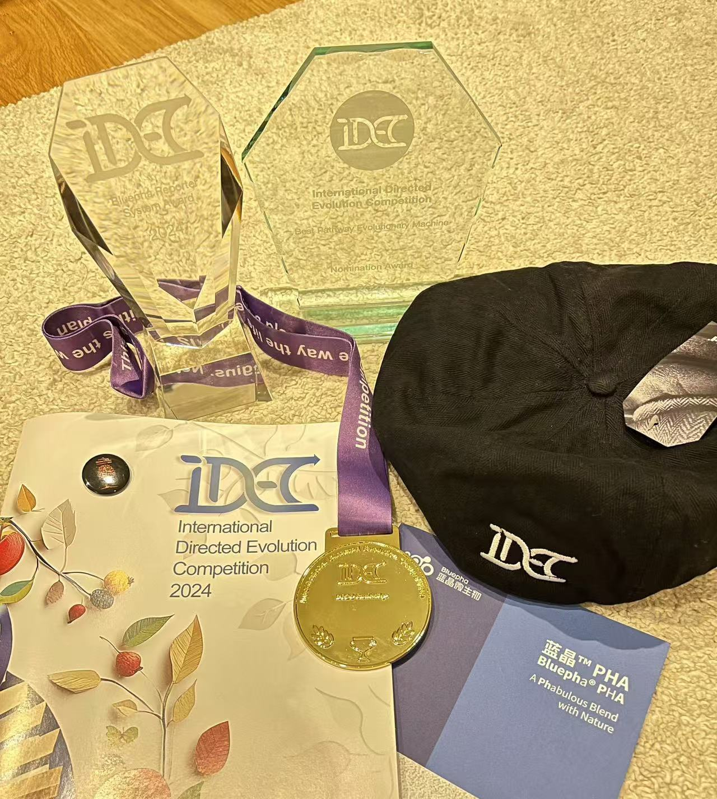
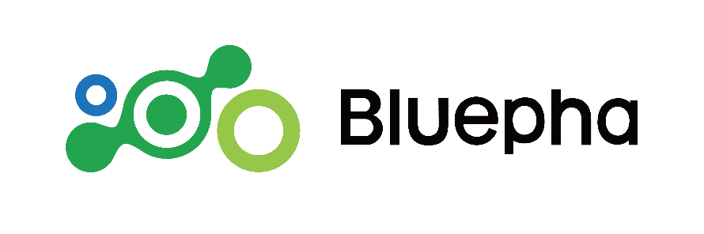
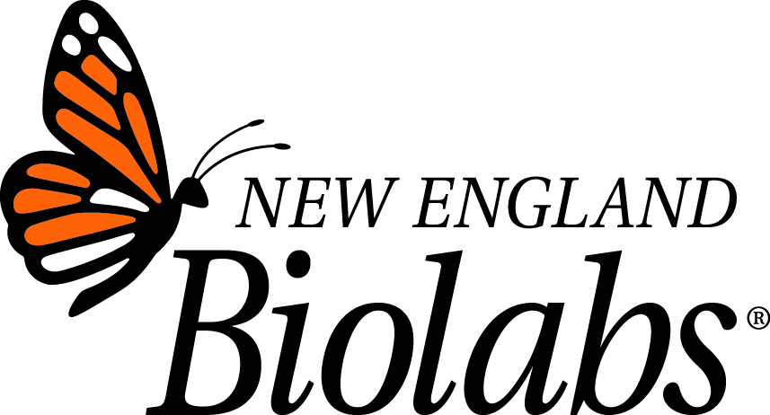
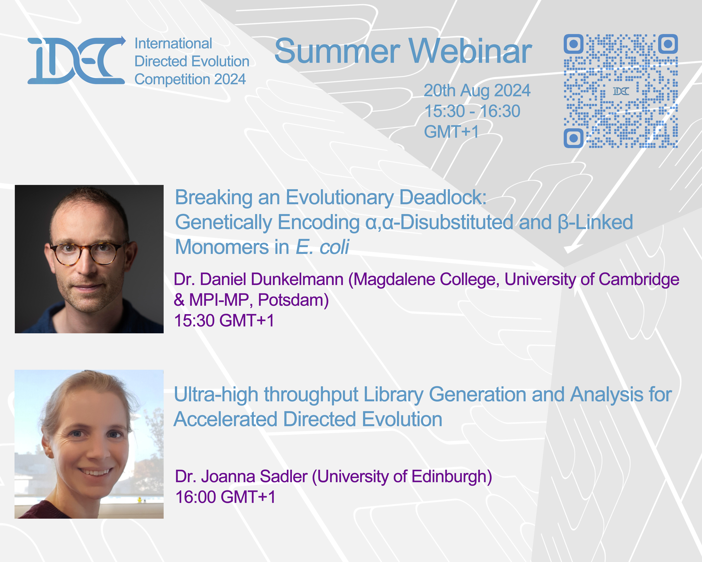
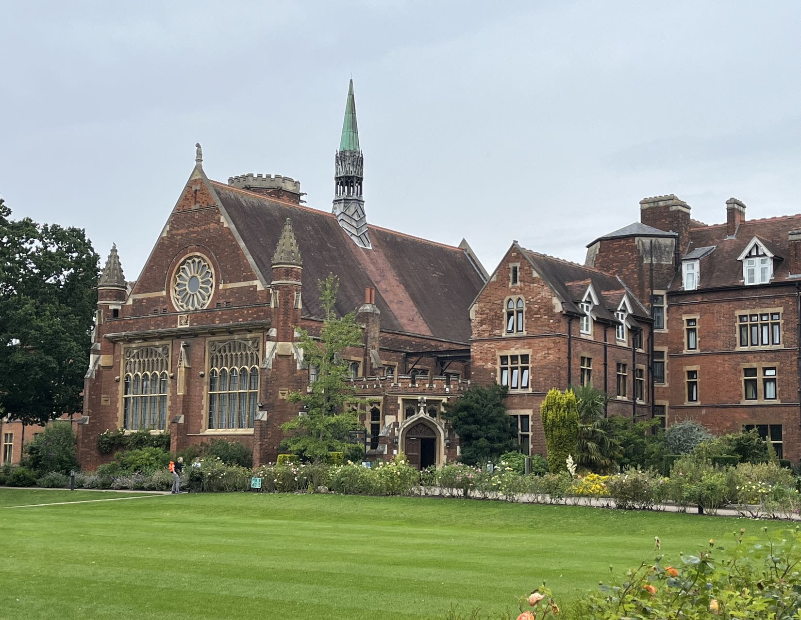

News and Announcements
iDEC 2024 Results!
Oct 28 2024
iDEC 2024 has come to an end on 27th Oct, and the results have been announced! 
iDEC Festival 2024 is coming!
Oct 23 2024
iDEC Festival 2024 will be held at Cambridge University College from 26-27 Oct. For more details,
please download the
handbook!

Dr. Zakir Tnimov will deliver the opening speech
Oct 24 2024
Dr. Zakir Tnimov is one of the iDEC Trustees. He is a synthetic biologist with more than 15 years of expertise in expanding genetic code, directed evolution, and ribosome engineering.
At Constructive Bio, currently overseeing projects focused on the evolution of aminoacyl-tRNA synthetases and engineering of the translation apparatus. He was previously a postdoc in Jason Chin's lab at MRC-LMB and earned a Ph.D.
in Chemical Biology from the University of Queensland, Australia.
For iDEC opening ceremony, he will give a speech 'Evolutionary Engineering: Solutions for the Future.'

Dr. Benjamin G. Davis will deliver a lecture
Oct 23 2024
We are delighted to announce that Prof. Benjamin G. Davis from Oxford University will join us in the iDEC Festival 2024!
He is the Fellow and Tutor in Organic Chemistry, Pembroke College, and the Science Director for Chemistry and Deputy Director, Rosalind Franklin Institute.
His group's research centres on the chemical understanding and exploitation of biomolecular function (Synthetic Biology, Chemical Biology and Chemical Medicine),
with an emphasis on carbohydrates and proteins. In particular, the group's interests encompass synthesis and methodology; target biomolecule synthesis; inhibitor/probe/substrate design;
biocatalysis; enzyme & biomolecule mechanism; biosynthetic pathway determination; protein engineering; drug delivery; molecular biology; structural biology; cell biology; glycobiology; molecular imaging and in vivo mechanism.
At the iDEC Award Ceremony on the 27th, he will give a lecture: ‘Sugars and Protein: Post-translational Editing.’
Traditional biology has explored methods that beautifully exploit ’the central dogma’ yet in principle the sequential information that controls function could [and, indeed, might be best] controlled by instead circumventing the dogma that Crick warned us of.
This talk will discuss the use of chemistry as a non-traditional mode of programming function inside biology.

Dr. Mateo Sánchez will deliver a lecture
Oct 23 2024
We are delighted to announce that Dr. Mateo Sánchez from Cambridge University will join us in the iDEC Festival 2024!
He has been awarded with a Wellcome Trust Career Development Award recently and he is leading his independent group in the Department of Chemistry at Cambridge.
At the iDEC Award Ceremony on the 27th, he will give a lecture: ‘Directed evolution of molecular tools for applications in neuroscience and cell biology.’
Molecular tools such as scFLARE or FLiCRE transform transient neuronal activity into long-lasting outputs such as the expression of a reporter gene,
and are leveraged for the mapping and manipulation of active neuronal circuits underlying specific behaviours.
In this talk, in addition to explaining the molecular mechanisms of these tools and our recent efforts to increase their performance,
we will also discuss ongoing projects in protease engineering to trigger biological events such as the engineering of gas vesicles to produce ultrasound imaging in response to enzymatic activity.

Dr. Neil Dixon will deliver a lecture
Oct 23 2024
We are delighted to announce that Prof. Neil Dixon from the University of Manchester will join us in the iDEC Festival 2024!
Neil was awarded his MChem Medicinal Chemistry (2000) and PhD Bioorganic Chemistry (2004) from University of Leeds. Then was a post-doc at the University of Manchester (2006-2010).
In 2013 he was awarded a BBSRC David Phillips Fellowship. He currently holds the position of Reader (Associate Professor) at the University of Manchester and leads a research team focused on renewable chemical bio-manufacturing, and bioremediation.
At the iDEC Award Ceremony on the 27th, he will give a lecture: ‘Efficiently sampling sequence/design space - biosensors and bioprocesses.’
For a long time, the directed evolution of biosensors has been one of the most populer topics for iDEC teams. This year, Prof. Neil Dixon will present how to evolve biosensors by combining directed evolution with experimental and modeling approaches.

Bluepha supports iDEC
Oct 2 2024
We are pleased to announce that Bluepha has officially become a sponsor of iDEC 2024! We are deeply thankful for Bluepha's generous contribution, which allows iDEC to extend its reach and influence to students worldwide. As a loyal sponsor for the past four years, Bluepha has consistently shown its strong commitment to supporting young talent and fostering growth within the iDEC community. We look forward to working closely with our esteemed sponsor to create an engaging platform for aspiring minds in the field of directed evolution. Together, we will continue to inspire and empower the next generation of innovators. 
New England Biolabs supports iDEC
Oct 2 2024
We are thrilled to announce that New England Biolabs has officially joined as a sponsor of iDEC 2024! We deeply appreciate their generous contribution, which allows us to further broaden the impact of iDEC's initiatives among students worldwide. Having supported us for four consecutive years, New England Biolabs consistently demonstrates its strong commitment to nurturing young talent and strengthening the iDEC community. We look forward to working alongside New England Biolabs in creating an exciting platform for young minds in the field of directional evolution. 
iDEC Webinar 2024 is coming
Aug 19 2024
iDEC Webinar 2024! Join us for an exciting session withDr. Daniel Dunkelmann and Dr. Joanna Sadler! They will present exciting research and share groundbreaking technological innovations with our audience! Don't miss out on the captivating talks! Registration: https://www.eventbrite.com/e/991148781687?aff=oddtdtcreator 
Accommodation
Aug 8 2024
To help iDEC teams find convenient accommodations in Cambridge, we have partnered with Møller Institute, University of Cambridge. They have reserved 30 double occupancy rooms exclusively for iDEC participants, available at a discounted rate. The rates are £110 per night for single occupancy and £130 per night for double occupancy, including breakfast, Wi-Fi, parking, and VAT. Teams can also book other hotels in Cambridge. To reserve a room at Møller Institute, please contact iDEC HQ for getting the discount code. Take a virtual tour of the Møller Institute.
Welcome to Cambridge!
Aug 8 2024
We are excited to announce that the iDEC Festival 2024 & Awards Ceremony will be held in person at Homerton College, University of Cambridge. This event offers a unique chance for all teams to unite and celebrate innovation and achievement. We look forward to hosting teams from around the globe as they showcase their innovations and accomplishments in this historic town. 
Registeration fee for iDEC Festival
March 28 2024
Starting from 2024, each team participating in the iDEC Festival online will need to pay iDEC Festival registration fee £200 totally. For the teams will visit Cambridge, the registration fee remains unchanged from previous year: £200 for each team member.
Registeration fee for iDEC 2024
March 28 2024
Team registration fees for iDEC 2024: Early-bird Registration: £ 500 (Available for the first 20 registered teams), Regular Registration: £ 1000 (Applicable after the first 20 registered teams).
iDEC 2024 is coming!
March 28 2024
We are happy to announce iDEC2024, the registration channel will open on 2 April, stay tuned!